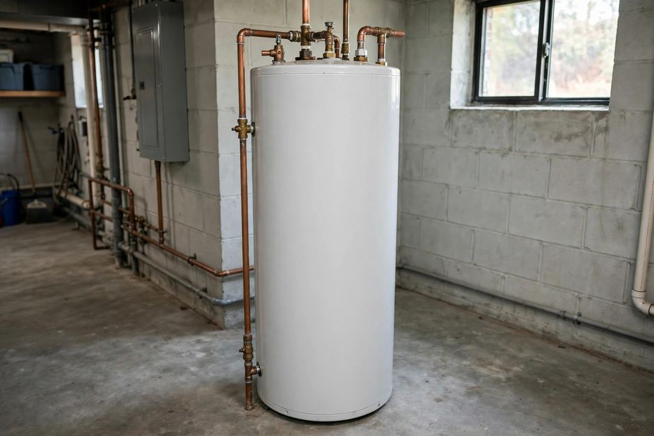
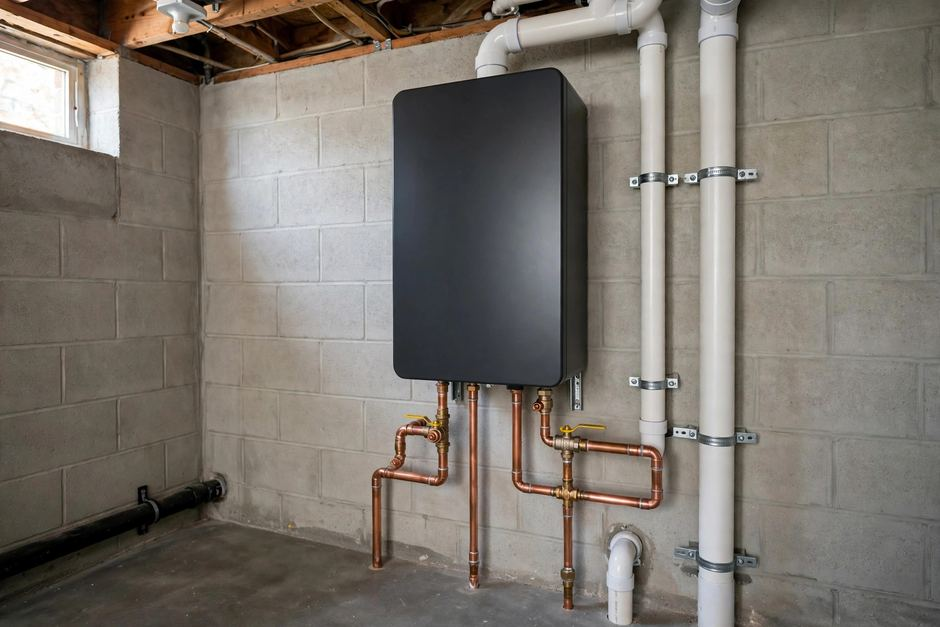
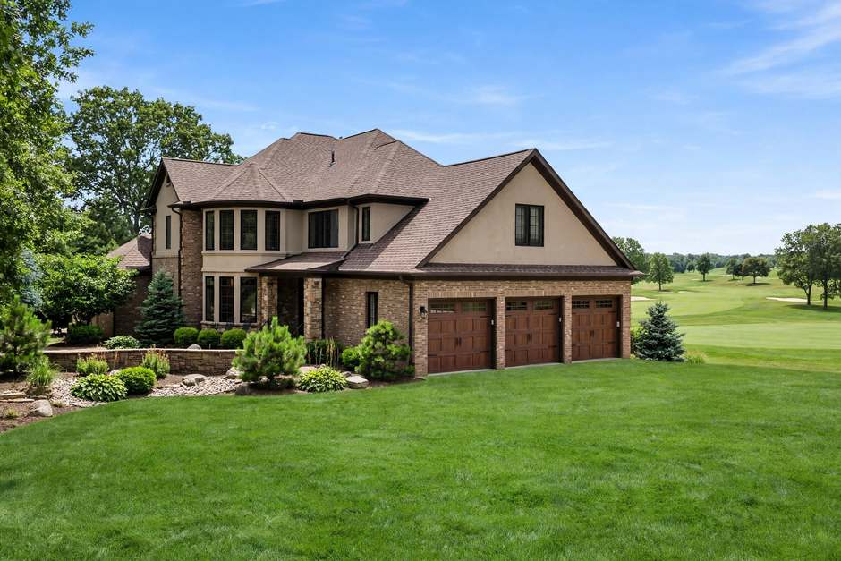

Tank replacement service in Belleville, Illinois
Water Heater Replacement in Belleville, IL
Water heater replacement swaps a failing tank for a new tank unit, with sizing, fuel arrangement, venting, and connections reviewed as part of the change. Replacement differs from repair, which keeps the existing tank, and from tankless conversion, which changes how water is heated. Hinkle Plumbing Company reviews the existing layout and discusses replacement scope before work begins.
1610 W Main St, Belleville, IL 62220(618) 677-6556Monday through Friday, 8:00 AM to 4:30 PM. Closed Saturday and Sunday.
What replacement covers
Tank replacement work in Belleville homes
Replacement covers the full change from an old tank to a new tank, including removal, placement, connections, and testing. Repair remains a separate option where a part fault is found and the tank body remains sound. For the repair option, see water heater repair in Belleville, IL and how part faults are addressed without a full swap.
Sizing for household demand
Tank capacity is reviewed against household hot water demand, fixture count, and use patterns, rather than assumed from the old unit alone. Sizing discussion shapes the replacement choice and the layout needs around the new unit.
Fuel type and connections
Gas and electric tank units use different fuel and power arrangements, with different connection and venting needs. The review checks the existing fuel arrangement and connections, so the new tank fits the layout without unrelated changes.
Venting review for the new unit
Venting carries combustion products away from gas units and needs to suit the new tank, its location, and the flue arrangement. Venting is reviewed before placement, with any correction needs discussed as part of replacement scope.
Expansion tank and valve review
Expansion tanks, relief valves, and shut-off valves are reviewed as part of replacement, since the new unit needs the same protective and control arrangements. Valve condition and placement are checked, with renewal needs discussed before installation.
Placement and access planning
Placement considers access for review, clearances around the unit, drain and overflow routing, and the path for bringing the new tank in. Layout limits are identified before removal, so placement does not assume space that is not available.
About Hinkle Plumbing Company
Tank replacement from a Belleville plumbing company
Hinkle Plumbing Company handles like-for-like tank replacement in Belleville, IL, with sizing, venting, and connections reviewed before the old tank is removed. Replacement scope is discussed after the existing layout and household demand are understood.
Hinkle Plumbing Company is based at 1610 W Main St, Belleville, IL 62220, and replaces tank water heaters in Belleville, IL with attention to sizing, fuel arrangement, and venting. The Google rating is 5.0 from 3 reviews. Monday through Friday, 8:00 AM to 4:30 PM. Closed Saturday and Sunday. A like-for-like swap keeps the storage-tank arrangement, while tankless conversion changes heating to on-demand flow and needs separate review. Expansion tank, venting, and connection needs are checked as part of replacement planning.

How we workA new tank water heater placed with valves and connections in a Belleville home.
How tank replacement proceeds
From layout review to testing of the new tank
The steps flex with the condition of the job, but the sequence stays the same.
Discussion of tank failure and demand
The discussion reviews tank symptoms, household hot water demand, and the existing fuel and venting layout. Findings shape whether replacement fits the fault pattern or repair discussion should come first.
Sizing and layout review on site
Tank capacity, placement, clearances, and connection points are reviewed on site, with access for removal and fitting checked. Venting, expansion tank, and valve needs are noted as part of replacement scope.
Removal of the old tank
The old tank is drained, disconnected, and removed, with water and fuel connections isolated before work begins. The area is checked for seepage, corrosion, and floor condition before the new unit is placed.
Fitting and connection of the new tank
The new tank is placed, leveled, and connected to water, fuel, venting, and valves, with joints checked as fitting proceeds. Expansion tank and relief valve arrangements are fitted as part of the installation layout.
Filling, heating, and leak testing
The tank is filled, heating is checked through operation, and joints, valves, and connections are watched for seepage. Findings are reviewed with the layout, and any correction needs are discussed before the work is complete.
Replacement methods
Methods for a like-for-like tank change
Like-for-like replacement keeps the storage-tank arrangement while renewing the unit, so sizing and connections follow the existing layout with corrections where needed. Tankless conversion changes the heating arrangement and needs different sizing, venting, and connection review. For the tankless scope, see tankless water heater services in Belleville, IL and how conversion differs from a tank swap.
Capacity matching to demand
Capacity is matched to household demand and fixture use, with the old tank size treated as a starting point rather than a fixed rule. Demand patterns and layout limits shape the capacity discussed for the new unit.
Fuel arrangement matching
The new tank follows the existing fuel arrangement where suitable, with gas or electric connections reviewed for condition and layout. Any change in fuel arrangement is discussed separately, since it changes connection and venting needs.
Venting correction and fitting
Venting is fitted to suit the new tank and its flue arrangement, with joints, slope, and termination reviewed as part of fitting. Correction needs found during review are discussed before the new unit is placed.
Water connection renewal
Water connections at the new tank are renewed or reseated, with shut-off valves, supply lines, and hot water lines checked for condition. Joints are checked for seepage during filling and heating tests after fitting.
Expansion and relief arrangements
Expansion tanks and relief valves are fitted or renewed to suit the new unit and the layout around it. Placement, access, and discharge routing are reviewed, with valve operation checked during testing.
Old unit handling and area review
The old unit is removed from the work area, with the floor, walls, and nearby pipework checked for seepage or corrosion found during removal. Area findings are discussed, so related needs are not hidden by the new installation.
Checks before handoff
The work is checked before the visit ends, and what was done is reviewed with you.
Common patterns
Patterns in tank replacement calls
The patterns below describe common replacement calls in general terms, without job details, to show how tank failure, demand, and layout shape replacement scope. Each pattern starts with a tank or demand concern and moves through review toward a new tank choice.

Tank seepage with repeated faults
A common call describes seepage at a tank base together with faults that return after repair, suggesting the tank body itself needs review. The review checks tank condition, valve and joint sources, and heating behavior to separate connection seepage from body failure. Where body failure is found, replacement scope is discussed, with sizing, fuel arrangement, and venting reviewed for the new unit. The old tank is removed, the new tank is fitted and tested, and joints are checked for seepage before the work is complete.
Demand outgrowing the existing tank
A common call describes hot water that runs short during household use, with demand that has grown beyond what the existing tank handles. The review checks household demand, fixture use, and tank capacity, with heating behavior reviewed to separate a sizing concern from a heating fault. Where sizing is the concern, replacement scope is discussed around a tank capacity that fits demand and layout limits. Placement, venting, and connections are reviewed for the new unit, with heating and seepage checks run after fitting.
Signs to review
Signs that may point toward replacement
Most calls fall into a few patterns. Knowing which pattern applies decides what the visit involves.
Seepage from the tank body
Seepage that traces to the tank body, rather than a valve or joint, can point toward replacement discussion. The review separates body seepage from connection seepage, since each source carries different scope.
Faults that return after repair
Heating or valve faults that return after repair can point to tank deterioration that part renewal does not resolve. Tank condition and fault pattern are reviewed together, with replacement discussion following where repair scope no longer fits.
Rust-colored water from hot taps
Rust-colored water from hot water taps, with cold water remaining clear, can point to tank corrosion. The review checks water color patterns, tank condition, and connection corrosion before replacement scope is discussed.
Hot water running short for household use
Hot water that runs short during normal household use can point to a sizing concern, a heating fault, or a mix of both. Demand, capacity, and heating behavior are reviewed together to separate sizing scope from repair scope.
Cost factors
What shapes tank replacement scope
Cost follows tank type, sizing, venting, and connection scope.
Straightforward like-for-like swap
Where the new tank matches the existing layout, fuel, and venting, scope centers on removal, fitting, connections, and testing. Access and valve condition shape the work, with corrections limited to the unit area.
Swap with venting or connection changes
Where venting, water connections, or valve arrangements need correction for the new unit, scope extends beyond fitting alone. Correction extent, access, and layout limits are reviewed, with needs discussed before work begins.
Swap with sizing or placement change
Where demand or layout calls for a different tank capacity or placement, scope includes sizing review, placement planning, and connection routing. Fuel, venting, and access needs are reviewed together, with options discussed before fitting.
Reviews from Google
What Customers Say on Google
★★★★★
“Very prompt and responsive, the worker was friendly and informative! Will use this company again!”
★★★★★
“Don did an outstanding job for me when I needed him and highly recommend his business”
★★★★★
“Rated 5.0 out of 5 across 3 Google reviews, all five stars.”

What permits apply to water heater replacement in Belleville?
Permit needs for replacement follow City rules for plumbing work. The City of Belleville requires a permit before plumbing work begins (§152.05(A)); direct replacement of a toilet, sink, faucet, or other appliance is exempt, except hot water heaters require an electrical or gas permit (§152.05(B)(3)). Check current City requirements before work begins, since permit scope can vary with the job.
How is tank size chosen for replacement?
Tank size is reviewed against household hot water demand, fixture use, and layout limits, rather than copied from the old unit without review. Demand patterns, including simultaneous use across fixtures, shape the capacity discussed for the new tank. Sizing, placement, and connection needs are reviewed together, with the replacement choice set after layout review.
How does tank replacement differ from tankless conversion?
Tank replacement keeps a storage tank that holds heated water, with sizing based on stored capacity and household demand. Tankless conversion heats water as it flows, with different sizing, venting, and connection needs that require separate review. Each scope is discussed separately, so conversion needs are not folded into a tank swap by default.
What affects the cost of water heater replacement?
Cost is shaped by tank type and capacity, fuel arrangement, venting needs, connection scope, and access for removal and fitting. Correction needs for venting, valves, or placement add scope beyond a straightforward swap. Call (618) 677-6556 to discuss layout and demand, so scope factors for the job can be reviewed without figures assumed in advance.
Related services
Related Plumbing Services in Belleville

Water Heater Repair in Belleville, IL
Tank repair for heating, valve, and connection faults where the tank body remains sound.
Tankless Water Heater Services in Belleville, IL
On-demand heating review that differs from storage-tank replacement in sizing and venting needs.
Plumbing Repairs in Belleville, IL
Broader repair work covering fixtures, leaks, and pipework beyond water heater scope.Mon–Fri 8:00 AM–4:30 PM
Discuss water heater replacement in Belleville, IL
Call Hinkle Plumbing Company at (618) 677-6556 to discuss water heater replacement in Belleville, IL, including sizing, venting, and replacement scope. Monday through Friday, 8:00 AM to 4:30 PM. Closed Saturday and Sunday.

Talk with the local team
Request Water Heater Installation
Call (618) 677-6556 during office hours, Monday through Friday, 8:00 AM to 4:30 PM. Tell us what is happening and we will talk through the next step.